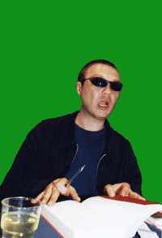

Не так давно состоялась, как гласило одно из объявлений, "творческая встреча Виктора Пелевина с русскоязычной интеллигенцией Лондона". Мероприятие было организовано компаниями "Russians_in_UK" и "Green Skird Books" и прошло в центре Лондона в Royal Horticultural Hall. Пока искали "точку", честно говоря, подтачивала мысль: "А вдруг за этими компаниями стоит какой-нибудь русскоязычный интеллектуал типа Мавроди (а кто скажет, что он дурак или по-русски не говорит?), и инвестированные в свой культурный капитал 10 фунтов пойдут на опохмелку очередному нашему умнику, этакому Бизнесменушке-International, решившему подзаработать на своих за бугром.
Первый приятный сюрприз состоял в том, что у входа приветливо улыбающаяся женщина поприветствовала нас на русском и даже не попросила показать билеты. В голове бронепоездом прогрохотала мысль (почему-то тоже на русском): "Так ведь можно же было пройти на халяву!!!". Очередная приятность состояла в том, что пока не подъехал Пелевин, пришедших угощали прекрасным австралийским вином. И вся обстановка была какая-то своя, родная, только без подобающих такого рода в России событиям шума, толкотни и суматохи. Вскоре появился и сам виновник торжества, и как-то незаметно с двумя-тремя организаторами пристроился с краю к народным массам.
Мы долго не решались подойти к Виктору Олеговичу подписать книгу (попутно выяснилось, что ручка была только у Гульнары) и когда наконец Айрат, будучи старшим из нас троих, взял на себя это бремя и подкатил к писателю, последний просто сказал: "Да, конечно...". Эти слова ознаменовали начало массового паломничества прежде стеснявшихся лондонских русскоязычных интеллигентов, которые все новыми и новыми волнами накатывали на Пелевина... А Гульнарина ручка все строчила и строчила...
Сама творческая встреча как таковая проходила в форме вопросов - ответов, очень часто переходящих в диалог. Из задающих вопросы особо запомнилась тетка in her fifties, которую невозможно спутать ни с кем иной как с советской училкой средней школы (в нехорошем понимании этого многогранного феномена). Так вот она, прочитав одну повесть Пелевина - "Чапаев и Пустота" (причем ударение в последней фамилии по ее версии должно быть на втором слоге) - задолбала Пелевина и всех остальных присутствующих темой барьера в творчестве писателя. Пелевин в отместку ответил ей тем же (вернее так же мудрено, по принципу "каков вопрос - таков и и ответ"). В итоге запуталась и сама тетка, да и пора уже было, т.к. у кого было чувство юмора и не было больших проблем, тяготивших душу, смеялись, а остальные посматривали на нее взглядом, в котором явственно читалось: "Если такие еще и остались (что само по себе факт примечательный), то как им удается быть востребованными за пределами Родины?" В ходе мероприятия на задние стулья незаметно присели Илья Лагутенко с Еленой, а потом после окончания встречи так же незаметно отчалили, кроясь от назойливых друзей, знакомых, и друзей и знакомых друзей и знакомых, подвешивающих один и тот же мелкошкурный вопросик относительно контрамарочек на предстоящий концерт "Муммий Тролля". Мы с Айратом были последними из нам известных, кому показали на этот счет кукиш (как говорится, фиг нам!). Но людей понять можно - это их хлеб, они же зарплаты или стипендии не получают.
Закончилось все подписанием недоподписанных книг и "свальным грехом" массового фотографирования с кумиром (кто-то просто рядом, а кто-то норовился и на голову сесть - это уж кому как повезло, или, может, у кого на что хватило наглости), после чего Пелевин сел в черный кэб и был таков. А мы еще потом поехали к Рустему на его богемного вида квартиру и торчали там до часу ночи.
Вот такая вот была в целом неплохая встреча.